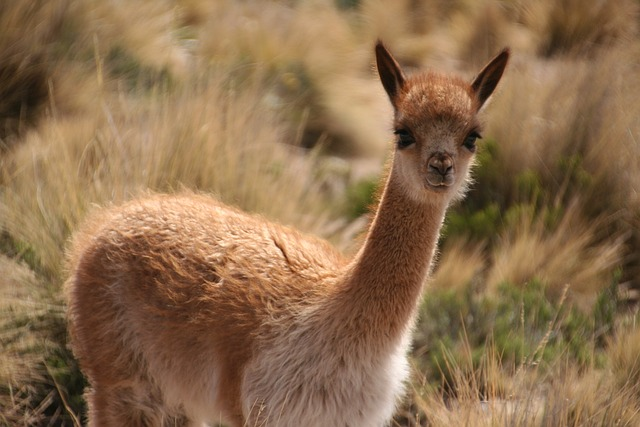
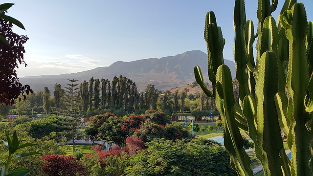

Shipibo-Conibo
The Shipibo-Conibo are an indigenous people along the Ucayali River in
the Amazon rainforest in Peru. They have lived in the Amazonian
rainforest for millennia. Many of their traditions are still practiced,
such as ayahuasca medicine work. Their medicine songs have inspired
artistic tradition and decorative designs found in their clothing,
pottery, tools, and textiles.